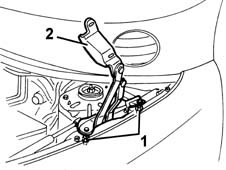
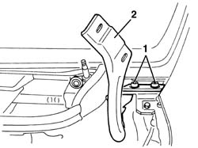

7025A18 L/H OR R/H BONNET LID HINGE (ONE) - R+R WITH LID REMOVED
- Path
- Procedures > 70 FITTINGS > 7025 COMPARTMENT LIDS > 7025A LOCATION OF BONNET WIND NOISE > 7025A18 L/H OR R/H BONNET LID HINGE (ONE) - R+R WITH LID REMOVED
- Kind
- repair procedure (removal / refitting; the operation number is the code)
- Applies to
- all engines; all production periods
- Interactive page
- https://sloeber94.github.io/elrnDB-fMltpl/en/#/2892132
Applies to: all engines; production: fino a 05/99, da 09/03, da 06/99 a 03/02, da 04/02 a 08/03, fino a 05/04
 Removing
Removing
 Refitting
RefittingOp. 7055B42 LH OR RH REFLECTOR(ONE) ON REAR BUMPERS - R R
1. Undo the nuts.
2. Remove the hinge.

Applies to: all engines; production: fino a 05/99, da 09/03, da 06/99 a 03/02, da 04/02 a 08/03, fino a 05/04
Refitting
RemovingCheck that the hinge is undamaged.
Fit the hinge and screw in the nuts without tightening them.
When the bonnet is fitted, refer to op.
Applies to: all engines; production: da 06/04
Removing
Refitting1. Undo the bolts.
2. Remove the hinges.

Applies to: all engines; production: da 06/04
Refitting
RemovingCheck that the hinges are not damaged.
Position the hinges and screw in the bolts without tightening them.
With the bonnet fitted, refer to op.